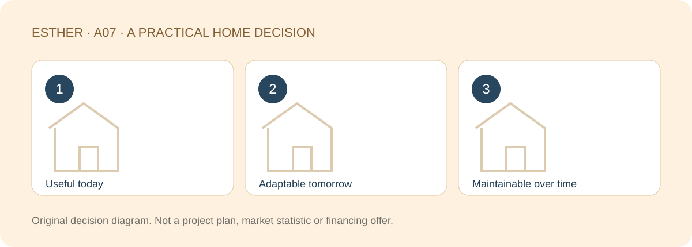

A HOME THAT FITS YOUR LIFE
Your Next Home in Johor Bahru: Planning for the Next Ten Years
Sources checked：2026-10-26 · By Esther, Real Estate Negotiator

Direct answer
A home for the next ten years should work now, allow realistic changes and remain manageable to maintain. It does not need to be larger, and no plan can guarantee its future resale value. Build your search around likely life changes and conditions you cannot compromise on, rather than a price prediction.
Browse article sections
Describe future life, not future capital growth
Children growing up, parents visiting more often and changes in work arrangements can all reshape how you use a home. Choose a few reasonable scenarios instead of trying to accommodate every possible future in the largest property you can find.
Unlike the question of whether to buy a second property at all, this guide helps form the brief for your next home. The RM600K–RM1.5M audience range is a planning context, not a claim about current project prices or stock.

Test whether spaces can change jobs
| Use today | Possible later use | Check now |
|---|---|---|
| Work room | Study or separate rest space | Dimensions, light, privacy and permitted use |
| Guest room | More frequent parental stays | Bathroom route and access |
| Larger living area | Different household schedules | Noise, storage and circulation |
| Extra floor area | A simpler home to look after | Actual use and upkeep responsibility |
Adaptability does not mean unrestricted renovation. Structure, approved plans, management rules and any necessary approvals need checking before assuming walls can move or spaces can be enclosed. Do not accept a home that fails today solely because of an unverified alteration idea.
Choose the upkeep you can keep doing
More area, elaborate finishes and additional facilities can create different maintenance jobs. Identify who will arrange them, the time involved and how costs will be reserved. For a condo, separate shared management from inside-unit responsibilities; for landed homes, consider the roof, drainage and external upkeep. Strata-landed homes may also have shared arrangements.
Keep management performance marked as unknown where reliable project evidence is absent. Planning for ten years does not mean fixing ten years of charges in your spreadsheet. Costs, equipment and rules can change; leave room for those changes.

A location should support more than one timetable
Compare current work, your partner’s route, family activities and everyday services alongside plausible changes. Not everything needs to be nearby. Decide which few journeys matter most and what trade-off the household can sustain.
If a purchase depends heavily on an uncompleted facility or transport proposal, ask whether the home works without it. A target date is not a guarantee, and a future transport story should not conceal a daily routine that already conflicts with your needs.
Distinguish fixed conditions from adjustable ones
Furniture and household routines are generally easier to change than location and structural layout, though any alterations still need checking. Compare the hardest-to-change conditions first. Where two homes work today, consider which requires fewer unverified changes under a reasonable future scenario. Revisit the brief as life actually changes.
Compare moving and improving with the same brief
- Preserve what already works in your present life.
- Identify repeated problems that the current home cannot reasonably solve.
- Separate furniture and household adjustments from changes requiring approval.
- Exclude unconfirmed rent, transport promises and future gains from the basic case.
Compare the full cost of moving with realistic improvements to the existing home. A smaller next home may be a meaningful upgrade if it reduces upkeep and improves daily life. More floor area alone is a weak reason if it also removes financial and practical flexibility.

Frequently asked questions
Does a ten-year plan predict property prices?
No. It considers use and holding conditions, not future rent, capital appreciation or resale proceeds.
Is buying bigger the safer choice?
Not necessarily. Extra space needs a purpose, an affordable cost and an upkeep plan.
Can I assume I will remove walls later?
No. Confirm structure, approved use, plans and management restrictions before depending on alterations.
Is downsizing a step backwards?
Not if it improves access, upkeep and the way your household uses the home.
Find a home around the next stage of your life
Share the part of your home search you want to clarify, your budget range and a suitable time to chat. A viewing or appointment is confirmed only after arrangements are agreed.
Discuss my home search with EstherThe editable message identifies this guide. Nothing is sent until you choose to send it. No identity or financial documents are needed in an initial chat.Sources and scope
Checked：2026-10-26。Practical comparisons and checklists are original editorial guidance, not market statistics, a professional inspection or personalised legal, tax or financing advice. Project details and transaction-specific requirements need separate verification. Historical source dates do not establish a new policy announcement. No loan approval, rental, appreciation, search ranking or AI citation is guaranteed.